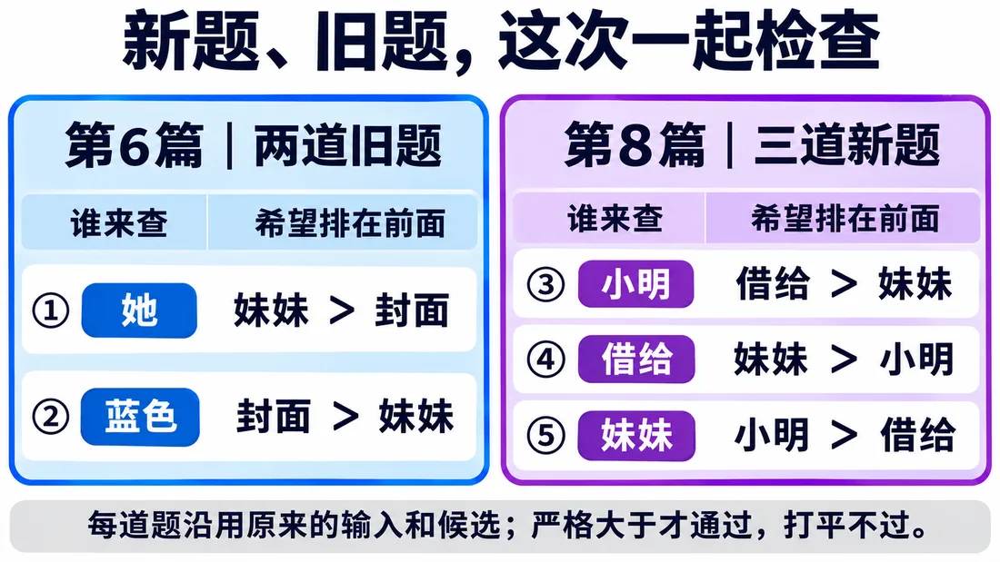
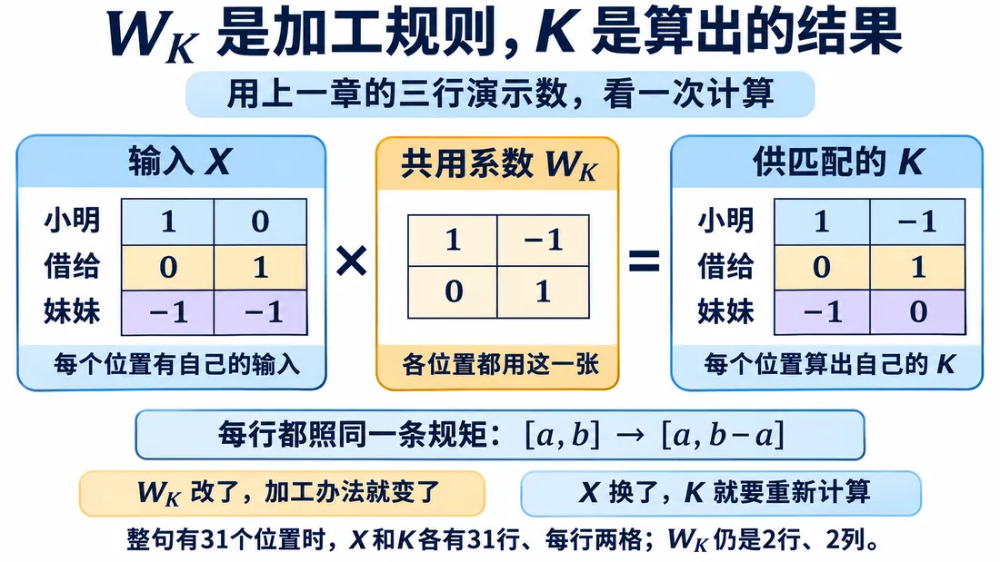
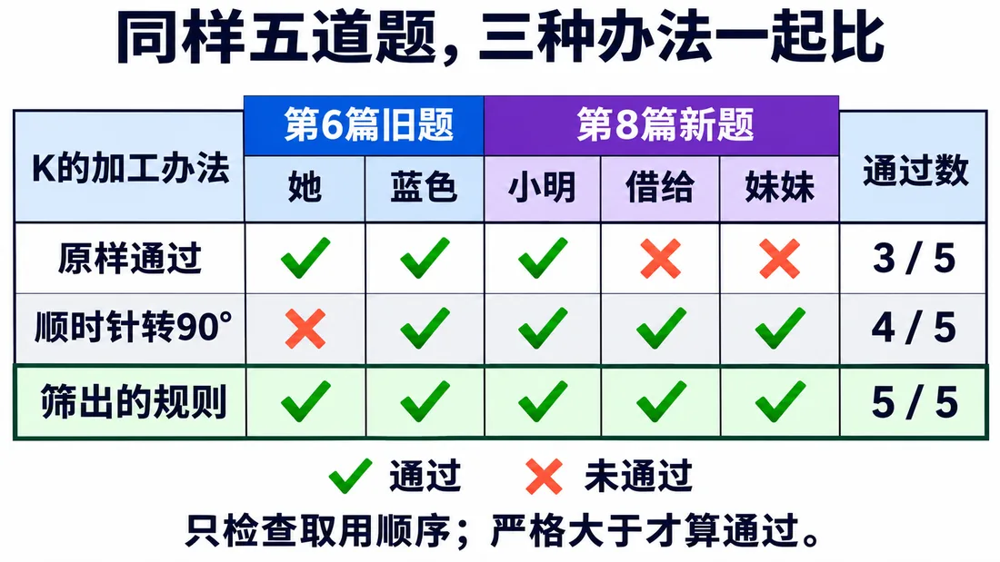

我们在这儿
前面拆 Token、配向量、加位置，用 QK 打分、softmax 换比例、V 取回。之前试过统一转 90°，三道新题过了，可回头一查，“她”本来该多用“妹妹”，却偏向了“封面”。这一篇找一条能兼顾新旧要求的规矩。
这一篇要解决找出能同时满足五道题的 WK，候选矩阵共 81 个。
大概阅读约 12–16 分钟
先把五道题摆在一起：
每试一个新办法，就拿这五道一起查。
这两次实验各沿用当时的数字，所以“妹妹”在两组里的数不同。
这次只换 K 的生成办法。输入和检查要求都不变。

把 90° 转法写成矩阵乘法，中间那四个数就是一张系数矩阵，记作 WK。把这四个数想成四个可调旋钮：换一组系数，既可以改箭头朝向，也可以改长度。无论哪个位置、哪次查询，用的都是同一张 WK。
写成公式 K＝XWK：X 放各位置输入，WK 放共用系数，K 里是算出的结果。整句 31 行，WK 只有 2 行 2 列。
下面这个演示，能直接拧四个系数，每个 -1、0、1 三档，看输出怎么变。
先规定每个系数只试 -1、0、1。四个旋钮，每个旋钮有三种拧法，合起来 34＝81 个候选。原样通过、90° 转法都在里面。
电脑会按同一个顺序逐个查：
这种重复计算，正是电脑擅长的。
结果，五道全过的只有一个。
办法很简单：第一格照旧，第二格减去原来的第一格。
三种办法对照看：
但这只说明它满足眼前要求。换组输入，还得继续查。
筛完之后，先把选中的矩阵代回三行，看它是不是真的算对。

代回确认没问题，再和另外两种办法放在一起比。

这里可以先歇一下，下次从这一站接着读。
你可能要问：前面刚说固定配比不够，现在又共用系数，是不是绕回去了？先拿数字看。
再换两个查询：
这就像同一把尺子量不同的人。尺子没换，量出的身高不同。
共用的是计算规则。每次取谁、取多少，仍由当时输入算出来。
Q 和 V 也可以各给一张系数矩阵 WQ、WV。
这些 W 就是常说的权重矩阵。里面的系数是模型参数的一部分，训练时根据误差调整。
这里有两个“权重”，别混在一起：
这些系数到底怎么一点点调出来的，这一篇先不展开。先把它们当成可以试的旋钮，看它们怎么用。
先看换 Q 后分数怎么变。再把三张矩阵的来路放在一起整理。
这一篇收个尾
这一篇拿到：唯一通过五道题的 WK，以及共用系数仍能产生不同查询结果。
下一篇接着看：研究分数差距怎样影响 softmax 比例。